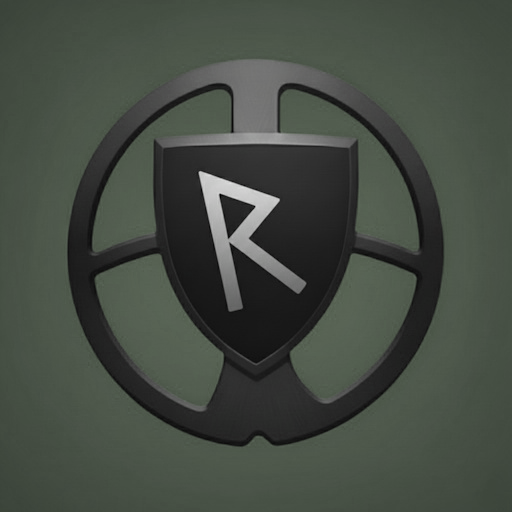
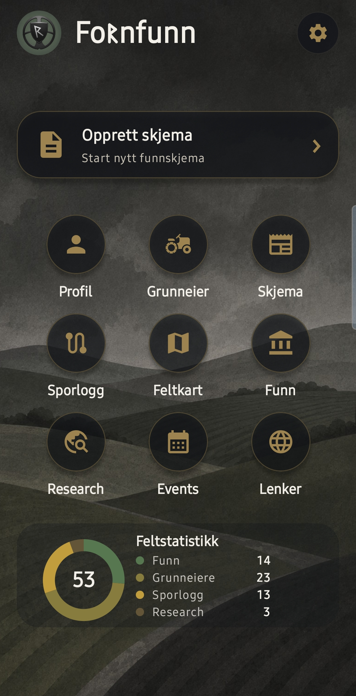
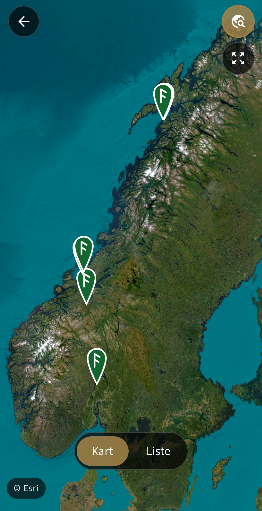
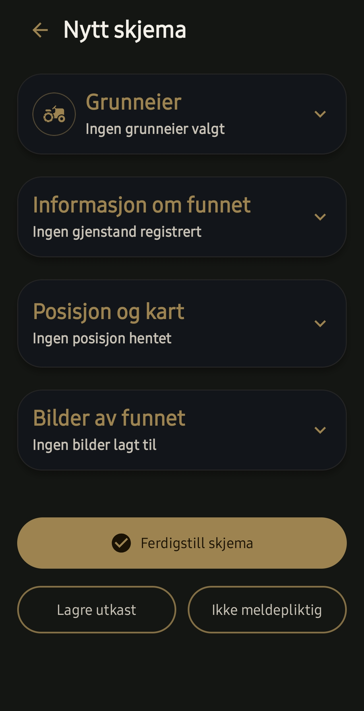
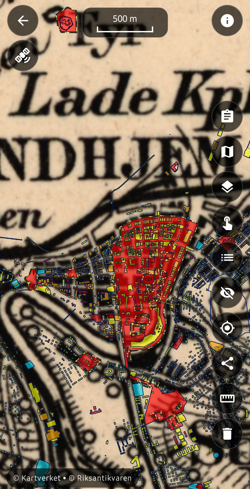

Funnregistrering
Registrer finner, grunneier, posisjon, funntype, beskrivelser og bilder.

FornfunnFor metalldetektorister
Fornfunn samler funnregistrering, grunneierinfo, posisjon, bilder, feltkart, sporlogg, research og events i én ryddig Android-app.



Laget for praktisk feltbruk med rask registrering, tydelige knapper, lyst og mørkt grensesnitt og kartvisninger med satellitt, LiDAR, historiske kart, eiendomsgrenser, kulturminner og research-verktøy.
Alt på ett sted
Registrer finner, grunneier, posisjon, funntype, beskrivelser og bilder.
Bruk satellitt, LiDAR og historiske kart med grenser, kulturminner og direkte oppslag mot grunnbok.
Loggfør turen og få oversikt over ruter og feltarbeid over tid.
Se funn samlet på kartet og få bedre oversikt over egen historikk.
Kombiner ulike kart med overlays som kulturminner.
Hold deg oppdatert på treff, turer og relevante arrangementer.
Samle funndata, bilder og kart i en ryddig rapport når funnet skal dokumenteres.
Hold kontroll på funn, grunneiere og sporlogger direkte fra startsiden.
Skjermbilder
Rask tilgang til skjema, feltkart, funnkart, sporlogg, research, events og feltstatistikk.

Skjemaet holder detaljene ryddige, med posisjon, bilder og tydelige seksjoner.
Satellitt, LiDAR og historiske kart med grenser, kulturminner og research-funksjon.
Få oversikt over funnene dine på kart eller som liste.

Send posisjon og bilde når du vil dele et funn med andre.
Trygg og praktisk
Fornfunn er et verktøy for å dokumentere funn på en ryddig måte. Du velger selv hva du registrerer, lagrer og deler videre.
Kun for Android
Bruk Fornfunn til å gjøre registreringen enklere når funnet ligger foran deg.